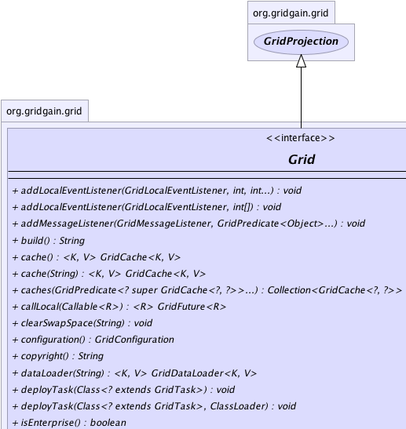
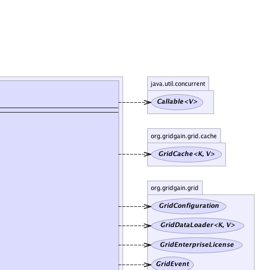
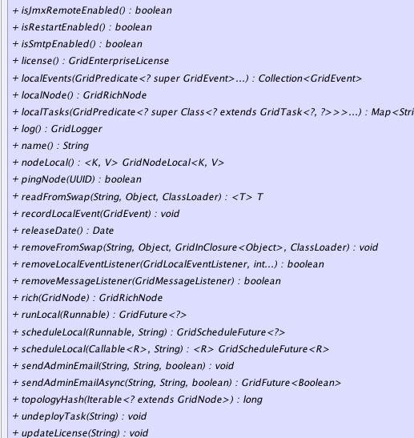
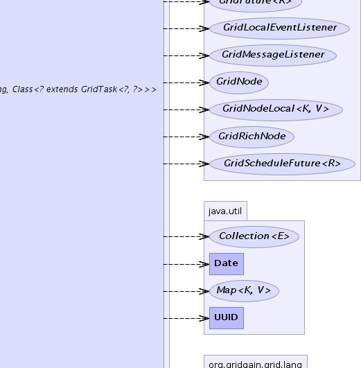
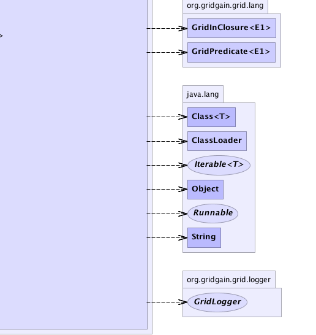

Start Here
Main Compute Grid APIs.
Start Here
Main Compute Grid APIs.
|
GridGain™ 4.0.0c
Community Edition |
|||||||||
| PREV CLASS NEXT CLASS | FRAMES NO FRAMES | |||||||||
| SUMMARY: NESTED | FIELD | CONSTR | METHOD | DETAIL: FIELD | CONSTR | METHOD | |||||||||
public interface Grid
Start Here
Main Compute Grid APIs.
You can obtain an instance of Grid through GridFactory.grid(),
or for named grids you can use GridFactory.grid(String). Note that you
can have multiple instances of Grid running in the same VM. For
information on how to start or stop Grid please refer to GridFactory class.
Grid interface allows you to perform all the main operations on the grid. Note also that
this interface extends GridProjection and defined as a global monad over all
nodes in the grid, i.e. set of all nodes across all clouds and the nodes outside of any clouds.
Following short video provides quick overview of basic Compute Grid capabilities:

For more information see Grid Interface on Wiki.
| Wiki | |
| Forum |
|  |  |
|  |  |
 |
 |
| Method Summary | ||
|---|---|---|
void |
addLocalEventListener(GridLocalEventListener lsnr,
int[] types)
Adds an event listener for local events. |
|
void |
addLocalEventListener(GridLocalEventListener lsnr,
int type,
int... types)
Adds an event listener for local events. |
|
void |
addMessageListener(GridMessageListener lsnr,
GridPredicate<Object>... p)
Deprecated. |
|
String |
build()
Gets build number of this GridGain instance. |
|
|
cache()
Gets default cache instance if one is configured or null otherwise. |
|
|
cache(String name)
Gets the cache instance for the given name if one is configured or null otherwise. |
|
Collection<GridCache<?,?>> |
caches(GridPredicate<? super GridCache<?,?>>... p)
Gets configured cache instance that satisfy all provided predicates. |
|
|
callLocal(Callable<R> c)
Executes given callable on internal system thread pool asynchronously. |
|
void |
clearSwapSpace(String space)
Clears all entry from the specified swap space. |
|
GridConfiguration |
configuration()
Gets the configuration of this grid instance. |
|
String |
copyright()
Copyright statement for GridGain code. |
|
void |
deployTask(Class<? extends GridTask> taskCls)
Explicitly deploys given grid task on the local node. |
|
void |
deployTask(Class<? extends GridTask> taskCls,
ClassLoader clsLdr)
Explicitly deploys given grid task on the local node. |
|
boolean |
isEnterprise()
Tests whether or not this GridGain runtime runs on an enterprise edition. |
|
boolean |
isJmxRemoteEnabled()
Whether or not remote JMX management is enabled for this node. |
|
boolean |
isRestartEnabled()
Whether or not node restart is enabled. |
|
boolean |
isSmtpEnabled()
Whether or not SMTP is configured. |
|
GridEnterpriseLicense |
license()
Gets enterprise license descriptor. |
|
Collection<GridEvent> |
localEvents(GridPredicate<? super GridEvent>... p)
Queries local node for events using passed-in predicate filters for event selection. |
|
GridRichNode |
localNode()
Gets local grid node. |
|
Map<String,Class<? extends GridTask<?,?>>> |
localTasks(GridPredicate<? super Class<? extends GridTask<?,?>>>... p)
Gets map of all locally deployed tasks keyed by their task name satisfying all given predicates. |
|
GridLogger |
log()
Gets grid's logger. |
|
String |
name()
Gets the name of the grid this grid instance (and correspondingly its local node) belongs to. |
|
|
nodeLocal()
Gets node-local storage instance. |
|
boolean |
pingNode(UUID nodeId)
Pings a remote node. |
|
|
readFromSwap(String space,
Object key,
ClassLoader ldr)
Reads data stored by Grid.writeToSwap(String, Object, Object, ClassLoader) method. |
|
void |
recordLocalEvent(GridEvent evt)
Records locally generated event. |
|
Date |
releaseDate()
Gets release date of this GridGain instance. |
|
void |
removeFromSwap(String space,
Object key,
GridInClosure<Object> c,
ClassLoader ldr)
Removes data stored by Grid.writeToSwap(String, Object, Object, ClassLoader) method. |
|
boolean |
removeLocalEventListener(GridLocalEventListener lsnr,
int... types)
Removes local event listener. |
|
boolean |
removeMessageListener(GridMessageListener lsnr)
Deprecated. |
|
GridRichNode |
rich(GridNode node)
Creates grid rich node wrapped around given thin node. |
|
GridFuture<?> |
runLocal(Runnable r)
Executes given closure on internal system thread pool asynchronously. |
|
|
scheduleLocal(Callable<R> c,
String ptrn)
Schedules closure for execution using local cron-based scheduling. |
|
GridScheduleFuture<?> |
scheduleLocal(Runnable c,
String ptrn)
Schedules closure for execution using local cron-based scheduling. |
|
void |
sendAdminEmail(String subj,
String body,
boolean html)
Sends given email to all configured admin emails. |
|
GridFuture<Boolean> |
sendAdminEmailAsync(String subj,
String body,
boolean html)
Schedule sending of given email to all configured admin emails. |
|
long |
topologyHash(Iterable<? extends GridNode> nodes)
This method calculates hash value of the given set of nodes (a topology). |
|
void |
undeployTask(String taskName)
Makes the best attempt to undeploy a task from the whole grid. |
|
void |
updateLicense(String lic)
Updates a new Enterprise license. |
|
String |
version()
Ges version string of the GridGain instance. |
|
GridEvent |
waitForEvent(long timeout,
Runnable c,
GridPredicate<? super GridEvent> p,
int... types)
Blocks and waits for the local event. |
|
GridFuture<GridEvent> |
waitForEventAsync(GridPredicate<? super GridEvent> p,
int... types)
Gets event future that allows for asynchronous waiting for the specified events. |
|
void |
writeToSwap(String space,
Object key,
Object val,
ClassLoader ldr)
Writes given data to specified swap space. |
|
| Methods inherited from interface java.lang.Iterable |
|---|
iterator |
| Methods inherited from interface org.gridgain.grid.GridMetadataAware |
|---|
addMeta, addMetaIfAbsent, addMetaIfAbsent, allMeta, copyMeta, copyMeta, hasMeta, hasMeta, meta, putMetaIfAbsent, putMetaIfAbsent, removeMeta, removeMeta, replaceMeta |
| Method Detail |
|---|
@GridEnterpriseFeature(value="Returns \'null\' in Community Edition.") @Nullable GridEnterpriseLicense license()
null when running on Community Edition.
@GridEnterpriseFeature(value="No-op in community edition.")
void updateLicense(String lic)
throws GridLicenseException
GridLicenseException - If license could not be updated.lic - The content of the license.boolean isRestartEnabled()
bin/ggstart.{sh|bat} script using -r argument. Node can be
programmatically restarted using GridFactory.restart(boolean, boolean)} method.
True if restart mode is enabled, false otherwise.GridFactory.restart(boolean, boolean)boolean isJmxRemoteEnabled()
com.sun.management.jmxremote
True if remote JMX management is enabled - false otherwise.boolean isSmtpEnabled()
GridConfiguration.getSmtpHost().
If SMTP is not configured all emails notifications will be disabled.
True if SMTP is configured - false otherwise.GridConfiguration.getSmtpFromEmail(),
GridConfiguration.getSmtpHost(),
GridConfiguration.getSmtpPassword(),
GridConfiguration.getSmtpPort(),
GridConfiguration.getSmtpUsername(),
GridConfiguration.isSmtpSsl(),
GridConfiguration.isSmtpStartTls(),
Grid.sendAdminEmailAsync(String, String, boolean)GridFuture<Boolean> sendAdminEmailAsync(String subj, String body, boolean html)
Note that this method returns immediately with the future and all emails will be sent asynchronously in a different thread. If email queue is full or sending has failed - the email will be lost. Email queue can fill up if rate of scheduling emails is greater than the rate of SMTP sending.
Implementation is not performing any throttling and it is responsibility of the caller to properly throttle the emails, if necessary.
Note that this feature only available in Enterprise Edition.
subj - Subject of the email.body - Body of the email.html - If true the email body will have MIME html subtype.
true email was successfully sent. In all
other cases - sending process has failed.Grid.isSmtpEnabled(),
Grid.sendAdminEmail(String, String, boolean),
GridConfiguration.getAdminEmails()
void sendAdminEmail(String subj,
String body,
boolean html)
throws GridException
Note that this method will return only if email is successfully sent. In case of sending failure it will throw exception. This method will block until either email is successfully sent or exception is thrown due to failure.
Implementation is not performing any throttling and it is responsibility of the caller to properly throttle the emails, if necessary.
Note that this feature only available in Enterprise Edition.
GridException - Thrown in case when sending has failed.subj - Subject of the email.body - Body of the email.html - If true the email body will have MIME html subtype.Grid.isSmtpEnabled(),
Grid.sendAdminEmailAsync(String, String, boolean),
GridConfiguration.getAdminEmails()GridLogger log()
boolean isEnterprise()
True for enterprise edition, false - for community edition.GridEnterpriseFeatureException,
GridEnterpriseOnlyGridRichNode rich(GridNode node)
Note that in most cases end user should not have to use this method as most of the APIs returning rich nodes already. This functionality exists for easier migration from previous versions as well as for internal purposes.
Note also that GridGain caches rich instances internal and for same thin node it will always return the same rich node.
node - Thin node to wrap.
GridEvent waitForEvent(long timeout,
@Nullable
Runnable c,
@Nullable
GridPredicate<? super GridEvent> p,
@Nullable
int... types)
throws GridException
This is one of the two similar methods providing different semantic for waiting for events. One method (this one) uses passed in optional continuation so that caller can pass a logic that emits the event, and another method returns future allowing caller a more discrete control.
This method returns when either event of specified type has been generated and passed the optional predicate, if any, or the timeout has elapsed. Note that some local events are generated in response to the actions on remote nodes.
This method encapsulates an important paradigm as many operations in GridGain cause local events to be generated even for the operations that may happen on the remote nodes. This method provides convenient one-stop blocking and waiting functionality for such cases.
GridException - Thrown only when continuation throws any exception.timeout - Timeout in milliseconds. If timeout value is less than or equal to zero, the
method will not wait at all and will return immediately.c - Optional continuation. If specified it will ba called right after the event listener
is registered but before the wait countdown started. This parameter is important when
you need to avoid a window between execution of an operation that can cause the event
and settings the event listener. Passing this operation as continuation into this method
allows to avoid this window.p - Optional filtering predicate. Only if predicates evaluates to true will the event
end the wait. Note that events of provided types only will be fed to the predicate.types - Types of the events to wait for.
null if the call got timed out.Grid.waitForEventAsync(GridPredicate, int...)GridFuture<GridEvent> waitForEventAsync(@Nullable GridPredicate<? super GridEvent> p, @Nullable int... types)
This is one of the two similar methods providing different semantic for waiting for events. One method uses passed in optional continuation so that caller can pass a logic that emits the event, and another method (this one) returns future allowing caller a more discrete control.
This method returns a future which by calling one of its get methods will block
and wait for the specified event (either indefinitely or with provided timeout). Note that
you need to call this method to acquire the future before emitting the event itself. This
way you can avoid the window when event is emitted but no listener is set for it.
This method encapsulates an important paradigm as many operations in GridGain cause local events to be generated even for the operations that may happen on the remote nodes. This method provides convenient one-stop blocking and waiting functionality for such cases.
p - Optional filtering predicate. Only if predicates evaluates to true will the event
end the wait. Note that events of provided types only will be fed to the predicate.types - Types of the events to wait for.
Grid.waitForEvent(long, Runnable, GridPredicate, int...)long topologyHash(Iterable<? extends GridNode> nodes)
Note that since GridGain topology architecture is peer-to-peer (without centralized coordination) there is still a small window in which different nodes would have different version for the same topology. Therefore, this version cannot be used in strict ACID context. Values returned by this method are not guaranteed to be sequential. Standard implementation uses CRC32 hash method.
nodes - Collection of grid nodes. Note that this can be either full topology or
any subset of it.
void addLocalEventListener(GridLocalEventListener lsnr,
int[] types)
Note that by default all events in GridGain are enabled and therefore generated and stored by whatever event storage SPI is configured. GridGain can and often does generate thousands events per seconds under the load and therefore it creates a significant additional load on the system. If these events are not needed by the application this load is unnecessary and leads to significant performance degradation.
It is highly recommended to enable only those events that your application logic requires
by using either GridConfiguration.getExcludeEventTypes() or
GridConfiguration.getIncludeEventTypes() methods in GridGain configuration. Note that certain
events are required for GridGain's internal operations and such events will still be generated but not stored by
event storage SPI if they are disabled in GridGain configuration.
Note also that since event types are defined as integer the unknown (invalid) event types cannot be detected and therefore will be ignored (because there is no way to know which user-defined types are used).
GridRuntimeException - Thrown in case when passed in array of event types is empty.lsnr - Event listener for local events to add.types - Event types for which this listener will be notified. If this array is empty an exception
will be thrown.
NOTE: subscribing to large set of events will impose significant performance penalty.
GridEvent,
GridEventType,
Grid.addLocalEventListener(GridLocalEventListener, int, int...)
void addLocalEventListener(GridLocalEventListener lsnr,
int type,
@Nullable
int... types)
Note that by default all events in GridGain are enabled and therefore generated and stored by whatever event storage SPI is configured. GridGain can and often does generate thousands events per seconds under the load and therefore it creates a significant additional load on the system. If these events are not needed by the application this load is unnecessary and leads to significant performance degradation.
It is highly recommended to enable only those events that your application logic requires
by using either GridConfiguration.getExcludeEventTypes() or
GridConfiguration.getIncludeEventTypes() methods in GridGain configuration. Note that certain
events are required for GridGain's internal operations and such events will still be generated but not stored by
event storage SPI if they are disabled in GridGain configuration.
Note that unlike its sibling method this method never throws an exception because its signature guarantees that there is at least one event type to subscribe for.
Note also that since event types are defined as integer the unknown (invalid) event types cannot be detected and therefore will be ignored (because there is no way to know which user-defined types are used).
lsnr - Event listener for local events to add.type - Event type for which this listener will be notified.types - Optional event types for which this listener will be notified.GridEvent,
GridEventType,
Grid.addLocalEventListener(GridLocalEventListener, int[])
boolean removeLocalEventListener(GridLocalEventListener lsnr,
@Nullable
int... types)
lsnr - Local event listener to remove.types - Types of events for which to remove listener. If not specified,
then listener will be removed for all types it was registered for.
true if listener was removed, false otherwise.GridEventType,
GridEvent
@Deprecated
void addMessageListener(GridMessageListener lsnr,
@Nullable
GridPredicate<Object>... p)
GridProjection.listen(GridPredicate2[]) method for more convenient
message listening API.
lsnr - Message listener to register.p - Message filter predicates. If none is provided - every message received will be
delivered to registered listener.GridProjection.listen(GridPredicate2[]),
GridProjection.send(Collection, GridPredicate[]),
GridProjection.send(Object, GridPredicate[]),
Grid.removeMessageListener(GridMessageListener)@Deprecated boolean removeMessageListener(GridMessageListener lsnr)
GridProjection.listen(GridPredicate2[]) method
for more convenient message listening API.
lsnr - Message listener to remove.
true of message listener was removed, false if it was not
previously registered.GridProjection.listen(GridPredicate2[]),
Grid.addMessageListener(GridMessageListener, GridPredicate[]),
GridProjection.send(Collection, GridPredicate[]),
GridProjection.send(Object, GridPredicate[])GridRichNode localNode()
GridFuture<?> runLocal(@Nullable Runnable r) throws GridException
Note that class GridAbsClosure implements Runnable and class GridOutClosure
implements Callable interface. Note also that class GridFunc and typedefs provide rich
APIs and functionality for closures and predicates based processing in GridGain. While Java interfaces
Runnable and Callable allow for lowest common denominator for APIs - it is advisable
to use richer Functional Programming support provided by GridGain available in org.gridgain.grid.lang
package.
GridException - Thrown in case of rejected execution by internal system thread pool.r - Runnable to execute. If null - this method is no-op.
Grid.callLocal(Callable),
GridAbsClosure<R> GridFuture<R> callLocal(@Nullable Callable<R> c) throws GridException
Note that class GridAbsClosure implements Runnable and class GridOutClosure
implements Callable interface. Note also that class GridFunc and typedefs provide rich
APIs and functionality for closures and predicates based processing in GridGain. While Java interfaces
Runnable and Callable allow for lowest common denominator for APIs - it is advisable
to use richer Functional Programming support provided by GridGain available in org.gridgain.grid.lang
package.
GridException - Thrown in case of rejected execution by internal system thread pool.R - Type of the return value for the closure.c - Callable to execute. If null - this method is no-op.
Grid.runLocal(Runnable),
GridOutClosureGridScheduleFuture<?> scheduleLocal(@Nullable Runnable c, String ptrn) throws GridException
Here's an example of scheduling a closure that broadcasts a message to all nodes five times, once every minute, with initial delay in two seconds:
G.grid().scheduleLocal(
new CA() { // CA is a type alias for GridAbsClosure.
@Override public void apply() {
try {
g.run(BROADCAST, F.println("Hello Node! :)");
}
catch (GridException e) {
throw new GridClosureException(e);
}
}
}, "{2, 5} * * * * *" // 2 seconds delay with 5 executions only.
);
Note that class GridAbsClosure implements Runnable and class GridOutClosure
implements Callable interface. Note also that class GridFunc and typedefs provide rich
APIs and functionality for closures and predicates based processing in GridGain. While Java interfaces
Runnable and Callable allow for lowest common denominator for APIs - it is advisable
to use richer Functional Programming support provided by GridGain available in org.gridgain.grid.lang
package.
GridException - Thrown in case of any errors.c - Closure to schedule to run as a background cron-based job.
If null - this method is no-op.ptrn - Scheduling pattern in UNIX cron format with optional prefix {n1, n2}
where n1 is delay of scheduling in seconds and n2 is the number of execution. Both
parameters are optional.
<R> GridScheduleFuture<R> scheduleLocal(@Nullable Callable<R> c, String ptrn) throws GridException
Here's an example of scheduling a closure that broadcasts a message to all nodes five times, once every minute, with initial delay in two seconds:
G.grid().scheduleLocal(
new CO() { // CO is a type alias for GridOutClosure.
@Override public String apply() {
try {
g.run(BROADCAST, F.println("Hello Node! :)");
return "OK";
}
catch (GridException e) {
throw new GridClosureException(e);
}
}
}, "{2, 5} * * * * *" // 2 seconds delay with 5 executions only.
);
Note that class GridAbsClosure implements Runnable and class GridOutClosure
implements Callable interface. Note also that class GridFunc and typedefs provide rich
APIs and functionality for closures and predicates based processing in GridGain. While Java interfaces
Runnable and Callable allow for lowest common denominator for APIs - it is advisable
to use richer Functional Programming support provided by GridGain available in org.gridgain.grid.lang
package.
GridException - Thrown in case of any errors.c - Closure to schedule to run as a background cron-based job.
If null - this method is no-op.ptrn - Scheduling pattern in UNIX cron format with optional prefix {n1, n2}
where n1 is delay of scheduling in seconds and n2 is the number of execution. Both
parameters are optional.
<K,V> GridNodeLocal<K,V> nodeLocal()
Node-local values are similar to thread locals in a way that these values are not distributed and kept only on local node (similar like thread local values are attached to the current thread only). Node-local values are used primarily by closures executed from the remote nodes to keep intermediate state on the local node between executions.
There's only one instance of node local storage per local node. Node local storage is
based on ConcurrentMap and is safe for multi-threaded access.
boolean pingNode(UUID nodeId)
Discovery SPIs usually have some latency in discovering failed nodes. Hence, communication to remote nodes may fail at times if an attempt was made to establish communication with a failed node. This method can be used to check if communication has failed due to node failure or due to some other reason.
nodeId - ID of a node to ping.
true if node for a given ID is alive, false otherwise.GridDiscoverySpivoid deployTask(Class<? extends GridTask> taskCls) throws GridException
GridConfiguration.isPeerClassLoadingEnabled()), then other nodes
will automatically deploy task upon execution request from the originating node without
having to manually deploy it.
Another way of class deployment which is supported is deployment from local class path. Class from local class path has a priority over P2P deployed. Following describes task class deployment:
GridConfiguration.isPeerClassLoadingEnabled())
GridConfiguration.getPeerClassLoadingClassPathExclude()).GridConfiguration.isPeerClassLoadingEnabled())
Note that this is an alternative deployment method additionally to deployment SPI that
provides more formal method of deploying a task, e.g. deployment of GAR files and/or URI-based
deployment. See GridDeploymentSpi for detailed information about grid task deployment.
Note that class can be deployed multiple times on remote nodes, i.e. re-deployed. GridGain maintains internal version of deployment for each instance of deployment (analogous to class and class loader in Java). Execution happens always on the latest deployed instance (latest that is on the node where execution request is originated). This allows a very convenient development model when a developer can execute a task on the grid from IDE, then realize that he made a mistake, stop his node in IDE, fix mistake and re-execute the task. Grid will automatically detect that task got renewed and redeploy it on all remote nodes upon execution.
This method has no effect if the class passed in was already deployed. Implementation checks for this condition and returns immediately.
GridException - If task is invalid and cannot be deployed.taskCls - Task class to deploy. If task class has GridTaskName annotation,
then task will be deployed under a name specified within annotation. Otherwise, full
class name will be used as task's name.GridDeploymentSpivoid deployTask(Class<? extends GridTask> taskCls, ClassLoader clsLdr) throws GridException
GridConfiguration.isPeerClassLoadingEnabled()), then other nodes
will automatically deploy task upon execution request from the originating node without
having to manually deploy it.
Another way of class deployment which is supported is deployment from local class path. Class from local class path has a priority over P2P deployed. Following describes task class deployment:
GridConfiguration.isPeerClassLoadingEnabled())
GridConfiguration.getPeerClassLoadingClassPathExclude()).GridConfiguration.isPeerClassLoadingEnabled())
Note that this is an alternative deployment method additionally to deployment SPI that
provides more formal method of deploying a task, e.g. deployment of GAR files and/or URI-based
deployment. See GridDeploymentSpi for detailed information about grid task deployment.
Note that class can be deployed multiple times on remote nodes, i.e. re-deployed. GridGain maintains internal version of deployment for each instance of deployment (analogous to class and class loader in Java). Execution happens always on the latest deployed instance (latest that is on the node where execution request is originated). This allows a very convenient development model when a developer can execute a task on the grid from IDE, then realize that he made a mistake, stop his node in IDE, fix mistake and re-execute the task. Grid will automatically detect that task got renewed and redeploy it on all remote nodes upon execution.
This method has no effect if the class passed in was already deployed. Implementation checks for this condition and returns immediately.
GridException - If task is invalid and cannot be deployed.taskCls - Task class to deploy. If task class has GridTaskName annotation,
then task will be deployed under a name specified within annotation. Otherwise, full
class name will be used as task's name.clsLdr - Task resources/classes class loader. This class loader is in charge
of loading all necessary resources.GridDeploymentSpiMap<String,Class<? extends GridTask<?,?>>> localTasks(@Nullable GridPredicate<? super Class<? extends GridTask<?,?>>>... p)
p - Set of filtering predicates. If no predicates provided - all
locally deployed tasks, if any, will be returned.
void undeployTask(String taskName)
throws GridException
Note that GridGain maintains internal versions for grid tasks in case of redeployment. This method will attempt to undeploy all versions on the grid task with given name.
GridException - Thrown if undeploy failed.taskName - Name of the task to undeploy. If task class has GridTaskName annotation,
then task was deployed under a name specified within annotation. Otherwise, full
class name should be used as task's name.Collection<GridEvent> localEvents(@Nullable GridPredicate<? super GridEvent>... p)
p - Mandatory predicates to filter events. All predicates must be satisfied for the
event to be returned.
Note: unlike other methods in GridGain APIs if no predicates is provided this method will return no results. This exception is made to avoid situation when all local events are erroneously returned. Returning all local events may result in creating collection with tens of thousands elements seriously compromising the system's performance.
PEvoid recordLocalEvent(GridEvent evt)
GridProjection.remoteEvents(GridPredicate, long, GridPredicate[]) method.
evt - Locally generated event.String name()
If default grid instance is used, then
null is returned. Refer to GridFactory documentation
for information on how to start named grids.
null for default grid.String version()
Grid.build()String build()
Grid.version()Date releaseDate()
String copyright()
<K,V> GridCache<K,V> cache(@Nullable String name)
K - Key type.V - Value type.name - Cache name.
<K,V> GridCache<K,V> cache()
GridCacheProjection.name() method on default instance returns null.
K - Key type.V - Value type.
Collection<GridCache<?,?>> caches(@Nullable GridPredicate<? super GridCache<?,?>>... p)
p - Predicates. If none provided - all configured caches will be returned.
void writeToSwap(@Nullable
String space,
Object key,
@Nullable
Object val,
@Nullable
ClassLoader ldr)
throws GridException
GridException - Thrown in case of any errors.space - Optional swap space name. If null is passed - global swap space will be used.key - Data key.val - Data value.ldr - Class loader (optional).@Nullable <T> T readFromSwap(@Nullable String space, Object key, @Nullable ClassLoader ldr) throws GridException
Grid.writeToSwap(String, Object, Object, ClassLoader) method.
GridException - Thrown in case of any errors.space - Optional swap space name. If null is passed - global swap space will be used.key - Data key.ldr - Class loader (optional).
null if no data was stored.
void removeFromSwap(@Nullable
String space,
Object key,
@Nullable
GridInClosure<Object> c,
@Nullable
ClassLoader ldr)
throws GridException
Grid.writeToSwap(String, Object, Object, ClassLoader) method.
GridException - Thrown in case of any errors.space - Optional swap space name. If null is passed - global
swap space will be used.key - Data key.c - Optional closure that takes removed value and executes after actual
removing. If there was no value in storage the closure is not executed.ldr - Class loader (optional).
void clearSwapSpace(@Nullable
String space)
throws GridException
GridException - Thrown in case of any errors.space - Optional swap space name. If null is passed - global swap space will be used.GridConfiguration configuration()
NOTE:
SPIs obtains through this method should never be used directly. SPIs provide
internal view on the subsystem and is used internally by GridGain kernal. In rare use cases when
access to a specific implementation of this SPI is required - an instance of this SPI can be obtained
via this method to check its configuration properties or call other non-SPI
methods.
|
GridGain™ 4.0.0c
Community Edition |
|||||||||
| PREV CLASS NEXT CLASS | FRAMES NO FRAMES | |||||||||
| SUMMARY: NESTED | FIELD | CONSTR | METHOD | DETAIL: FIELD | CONSTR | METHOD | |||||||||
|
GridGain - Real Time Big Data
|
|

|
|